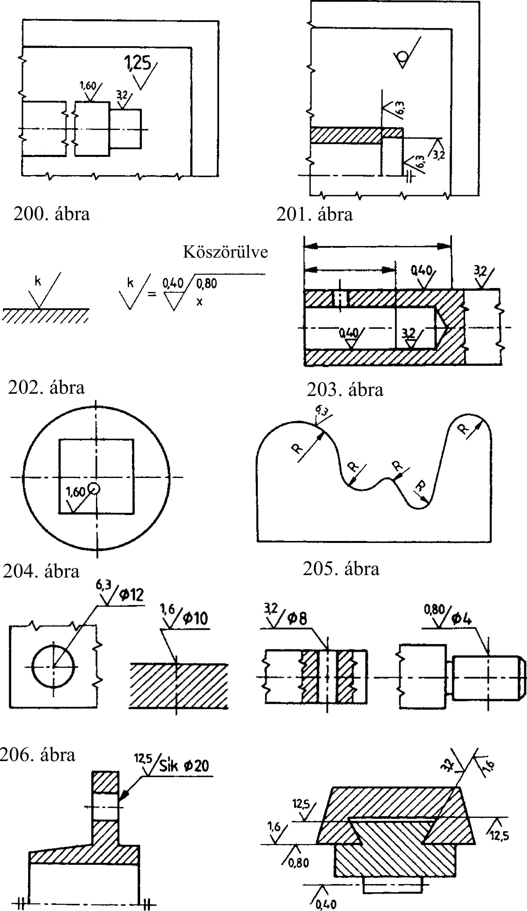

9. Felületminőség megadása A kiemelt érdességi jel mindazokra a felületekre vonatkozik, amelyek nincsenek érdességi jellel ellátva. A mellette elhelyezett kerek zárójeles nyitott ék azt jelenti, hogy a kiemelt érdességtől eltérő érdességű felület is van a rajzon (200. ábra). A szállítási állapotban (megmunkálás nélkül) maradó felületeket körös nyitott ékkel jelöljük. Ilyenkor számértéket nem írunk a jelre (201. ábra). A körös nyitott ék önmagában zárójeles ék és számérték nélkül - kiemelt felületi jelként nem szerepelhet. A felületi egyenetlenségek (megmunkálási nyomok) irányát ha szükséges - a 6. táblázatban összefoglalt jelekkel írjuk elő. Adatokkal kiegészített érdességi jel ismétlődésekor vagy helyszűke esetén a felületi érdesség megadható más célra nem foglalt kisbetűvel és nyitott ékkel. A jelmagyarázatot a feliratmező felett a műszaki követelményekben kell megadni (202. ábra). Az azonos névleges méretű, de különböző érdességű felületszakaszokat egymástól vékony folytonos vonallal kell elválasztani, és az érdességet külön-külön meg kell adni (203. Egymással éllel csatlakozó felületek azonos érdességét egyszer kell megadni. Ezt az érdességi jelre rajzolt 4... 5 mm átmérőjű, vékony vonalú körrel jelezzük (204. ábra). Folyamatos átmenettel csatlakozó felületekre az azonos érdességet csak egyszer kell megadni (205. ábra). Furatok egyszerűsített méretmegadásakor a furatfelület érdességét is a méretvonalon kell megadni. Az érdességi jel megelőzi a méretszámot (206. ábra). Kötőelemek alatti felfekvő felületek felületi érdességét a megmunkálási átmérővel együtt kell megadni. Az érdességi jel megelőzi az átmérő méretét (207. ábra). Méretmegadással ellátott összeállítási rajzokon az illeszkedő felületek érdességét mindkét felületre külön-külön meg kell adni (208. ábra). 9.5. Felületi hullámosság A hullámosság a névleges felülettől való olyan nagy térközű ismétlődő eltérés, amelynek hullámhossza a hullám mélységének sokszorosa (legalább 40-szerese). (209. ábra) A felületi hullámosságot a műszaki rajzokon a hullámosság alakjelével, a hullámosság magasság betűjelével és számértékével, valamint - esetenként - a hullámosság egyéb kiegészítő adatával kell megadni. A hullámosság alapjele az egyenlőtlen szárú nyitott ék, vonalszakasszal. Az alapjelet vékony folytonos vonallal rajzoljuk. Ezt a jelet közvetlenül a felületre rajzoljuk vagy a felülethez nyíllal kapcsolódó mutatóvonalra. A hullámosság magasság mérőszámát a Wz (Waviness) betűjelével együtt a vonalszakasz alá írjuk. A hullámosság magasság számértékét pm-ben adjuk meg (210. ábra). Hultamossagmagasscig 209. ábra Wz 3,2 W 32 w* 0,B 210. ábra s .ÍZT 160/ R 1,25/ jX ri - v - v- V - v200. ábra 207. ábra 208. ábra 6. táblázat rajzjele 1 X M C R P értelmezése A barázdairány az ábrázolt felület érdességi jellel ellátott kontúrvonalával párhuzamos A barázdairány az ábrázolt felület érdességi jellel ellátott kontúrvonalára merőleges A barázdairány az ábrázolt felület érdességi jellel ellátott kontúrvonalával ferde, egymást keresztező A barázdairány a vázlat szerinti meghatározott irány nélküli mintázatú A barázdairány közelítőleg kör alakú a felület középpontjához képest A barázdairány közelítőleg sugárirányú a felület középpontjához képest Nem barázdált. A felület egyenetlensége pontszerű bemélyedéseiből adódik (pl. szikraforgácsolt) _ megadás a rajzon 7777777 'JL -7/V77; 'X 7^77777 ,'M 777777 X •/7/V77; R 7777 49
